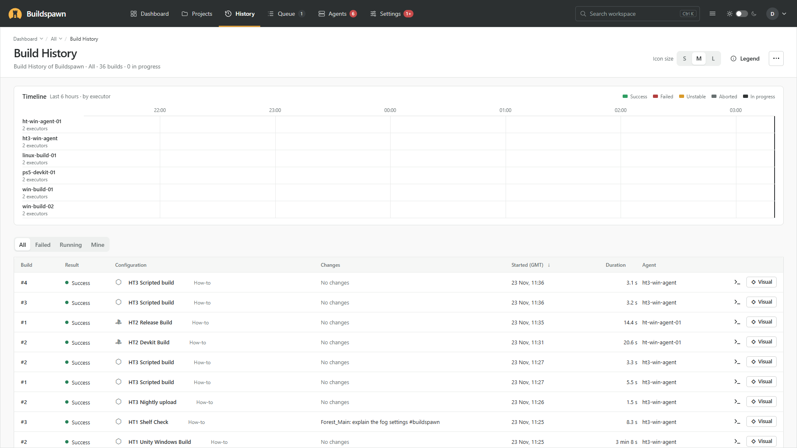
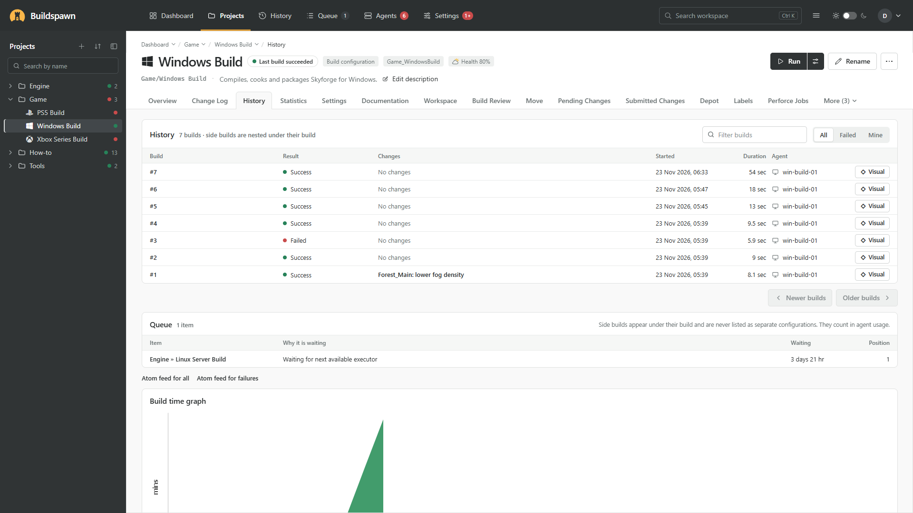

History
History lists every build that ran, newest first, with a timeline that shows which agent ran what and when.

When to use it
Use History to answer "what ran last night?" or "which builds failed today?" across all projects. For the builds of one build configuration, use its own History tab (see below).
The History page
Click History in the top bar. The title line says how many builds the list holds and how many are in progress, for example 36 builds · 0 in progress. You see only the builds of projects you may see. Personal builds of other people are not listed.
| Part | What it does |
|---|---|
| Icon size S, M, L | Sets the size of the status icons: small, medium or large. |
| Legend | Explains the status icons and the health icons. |
| Timeline | The last 6 hours, one lane for each agent, with its number of executors. Each build is a bar from its start to its end, coloured by result: Success, Failed, Unstable, Aborted or In progress. Use it to see which agents are busy and where a night build waited. |
| All, Failed, Running, Mine | The result filter. Failed shows failed builds, Running builds in progress, and Mine builds you started. No builds match. says the filter has no result. |
The columns
| Column | What it shows |
|---|---|
| Build | The build number or name. Click it to open the build page. |
| Result | The status, such as Success or Failed. A script's status text can show here. See The build name and status text. |
| Configuration | The build configuration, with its project. |
| Changes | The newest change in the build, or No changes. |
| Started (GMT) | When it started. Click the heading to sort the other way. |
| Duration | How long it took. |
| Agent | The agent that ran it. |
| Console and Visual buttons | Open the console, or the build in the visual editor's run view. |
The History tab of a build configuration

- Filter builds narrows the list by what you type. All, Failed and Mine filter by result and by who started the build.
- The columns are Build, Result, Changes, Started, Duration and Agent. Each row has a Visual button, and a … menu with Re-run and Re-run with changes….
- Side builds of Parallel blocks are nested under their main build and read Side build of #N.
- Newer builds and Older builds page through the list.
- The Queue card below lists the build configuration's waiting builds and why they wait.
- Atom feed for all and Atom feed for failures are feeds for this build configuration. See Atom feeds.
- The Build time graph draws how long each build took.
The History tab is one of the five fixed first tabs of a build configuration. Pipelines have it too.
What you see in a row
A row for a failed build has a red result and the build number links to the build page, where you read Decided by. See Find out why a build failed.
Problems and fixes
| Problem | What to do |
|---|---|
| A build I started is missing. | Click Mine. If it is a personal build, it shows only for you and for administrators. |
| The timeline is empty. | It shows the last 6 hours only. Older builds are in the list. |
| The list is long. | Use Failed or Running, or open the build configuration's History tab. |
Related pages
- The build page
- The Statistics tab: charts of the same builds.
- Atom feeds